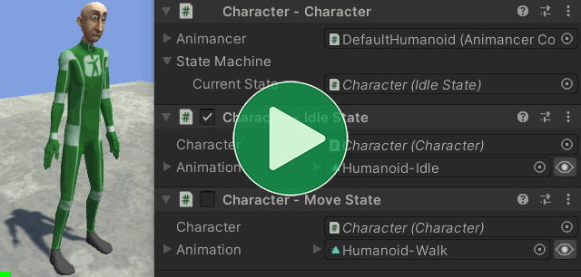

Once you have made your State Type, you can create your StateMachine. There are a various ways of doing that with different advantages and disadvantages depending on your needs. The two most common ones are:
- A Serialized Field if you want it visible in the Inspector.
- Otherwise, a Readonly Field lets you safely make it
public.
Serialized Field
It's often very useful to declare a StateMachine as a Serialized Field because:
- It allows you to set the first state in the Inspector.
- It allows you to view the
Current Stateat any time in the Inspector.

The recommended implementation looks like this:
[DefaultExecutionOrder(-10000)]
public class Character : MonoBehaviour
{
[SerializeField] private StateMachine<MyState> _StateMachine;
public StateMachine<MyState> StateMachine => _StateMachine;
protected virtual void Awake()
{
_StateMachine.InitializeAfterDeserialize();
}
}
Breakdown
Note that the state type must be serializable for this to work. That means it needs to have a [Serializable] attribute of its own or inherit from UnityEngine.Object (generally via MonoBehaviour, StateBehaviour, or ScriptableObject). Basically, if you can make a MyState field show up in the Inspector, then it can also be used in a serializable state machine.
Then you can use that class as the serialized field type:
[SerializeField] private StateMachine<MyState> _StateMachine;
Add a public property to allow other scripts to access it:
public StateMachine<MyState> StateMachine => _StateMachine;
You could just make the field public, but then other scripts would be able to set it to null or assign a different StateMachine which would likely be unintentional and cause problems unless you specifically plan for it. Utilizing proper encapsulation only takes a bit of effort upfront and can save you from wasting a lot of effort fixing bugs later on, especially if you're working in a team.
In a non-serialized state machine (such as if you use the Readonly Field approach), telling it to enter the first state would call OnStateEnter on it as you would expect. Unfortunately, with a serialized state machine it isn't possible for the system to automatically call OnStateEnter on the first state you set in the Inspector so you need to call InitializeAfterDeserialize in your script on startup. It's important to call that method before anything changes it's state (because that would let it change without calling OnStateEnter on the first state and then would call it again on the changed state). The easiest way to do that is usually to give your class a [DefaultExecutionOrder] attribute like this:
[DefaultExecutionOrder(-10000)]// Initialize the StateMachine before anything uses it.
public class Character : MonoBehaviour
{
...
protected virtual void Awake()
{
_StateMachine.InitializeAfterDeserialize();
}
}
Serialized Properties
You can use the field keyword to apply the [SerializeField] attribute to the backing field of an auto-property so that you can make it read-only without needing a separate field as well:
[DefaultExecutionOrder(-10000)]
public class Character : MonoBehaviour
{
[field: SerializeField] public StateMachine<MyState> StateMachine { get; private set; }
protected virtual void Awake()
{
_StateMachine.InitializeAfterDeserialize();
}
}
The name of the backing field is generated by the compiler and looks like <StateMachine>k__BackingField in this case. That means the serialized data is slightly larger than a regular field due to its length, which is unlikely to have any notable impact on performance, but is worth knowing in case you want to rename the property and use a FormerlySerializedAs attribute to let it keep existing data from the old field name.
Readonly Field
If you don't need the StateMachine to be visible in the Inspector or if your state type isn't serializable anyway, then you can just use a public readonly field to make it safely accessible:
public readonly StateMachine<MyState> StateMachine = new();
protected virtual void Awake()
{
StateMachine.TrySetState(firstState);
}
Other Approaches
Here are some of the other approaches that could be used and a summary of their problems:
Create in Awake
[SerializeField]
private State _Idle;
public StateMachine<State> StateMachine { get; private set; }
protected virtual void Awake()
{
StateMachine = new StateMachine<State>(_Idle);
}
If another script executes before this Awake method gets called, the StateMachine would still be null.
Initialize in Field Initializer
[SerializeField]
private State _Idle;
public readonly StateMachine<State>
StateMachine = new StateMachine<State>(_Idle);
That gives a compiler error because Field Initializers can't access instance fields (_Idle is an instance field).
Initialize in Constructor
[SerializeField]
private State _Idle;
public readonly StateMachine<State> StateMachine;
public MyClass()
{
StateMachine = new StateMachine<State>(_Idle);
}
That would compile and run, but won't actually work as intended because Constructors are executed immediately when the object is created which is before Unity's Serialization system can deserialize its fields, meaning that the _Idle field will still be null.
Default States
A regular StateMachine<TState> doesn't keep track of any states other than the CurrentState, but it is often useful to have a particular state that it can return to by default if nothing else is active so the StateMachine<TState>.WithDefault class allows you to do that:
- It inherits from the base
StateMachine<TState>, meaning it has the usualCurrentStateproperty and methods for Changing States. - It has a
DefaultStateproperty. If there is noCurrentStatewhen you set the default, the state machine will immediately enter that state. - It also has a
ForceSetDefaultStatecallback which is useful for End Events if you want to return to the default state when an animation ends.
The recommended initialization patterns are basically the same as the regular ones explained above.
- If used in a Serialized Field, it will show both the
Current StateandDefault Statein the Inspector. - Otherwise, if you initialize it entirely in code you can simply set its
DefaultStateproperty which will enter that state if it doesn't already have one:
public class Character : MonoBehaviour
{
[SerializeField]
private AnimancerComponent _Animancer;
public AnimancerComponent Animancer => _Animancer;
[SerializeField]
private CharacterState _Idle;
public readonly StateMachine<CharacterState>.WithDefault StateMachine = new();
protected virtual void Awake()
{
StateMachine.DefaultState = _Idle;
}
}
Then other states can use its ForceSetDefaultState for their End Events callback:
public abstract class CharacterState : StateBehaviour
{
[SerializeField]
private Character _Character;
public Character Character => _Character;
}
public class AttackState : CharacterState
{
[SerializeField]
private AnimationClip _Animation;
protected virtual void OnEnable()
{
AnimancerState animancerState = Character.Animancer.Play(_Animation);
animancerState.Events(this).OnEnd ??= Character.StateMachine.ForceSetDefaultState;
}
}